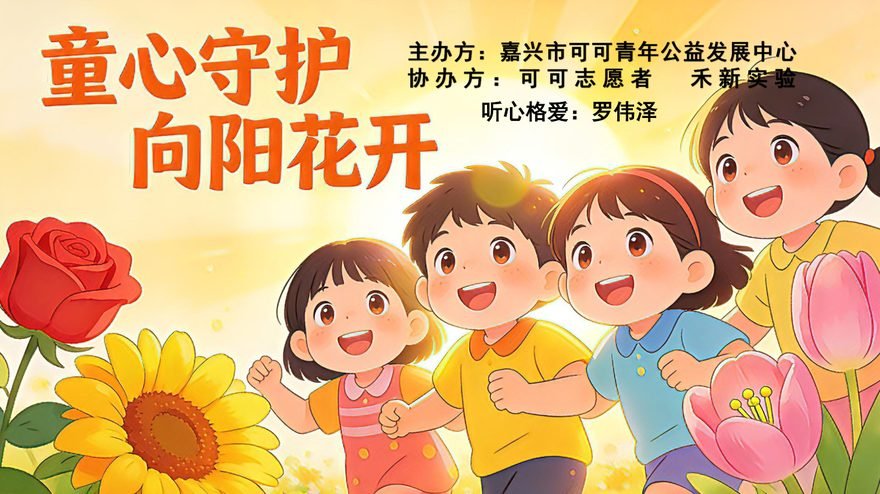
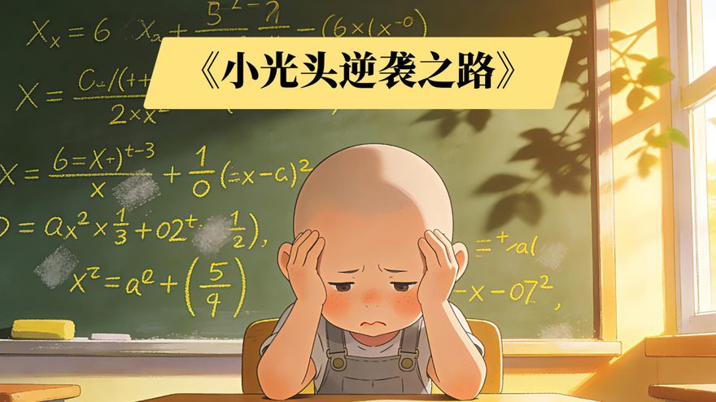
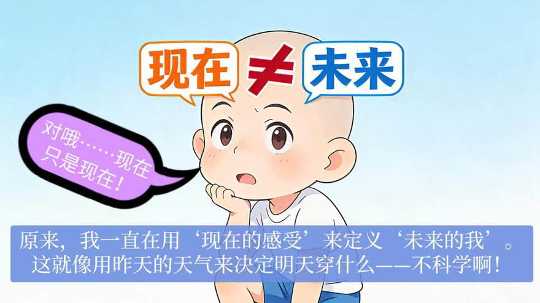
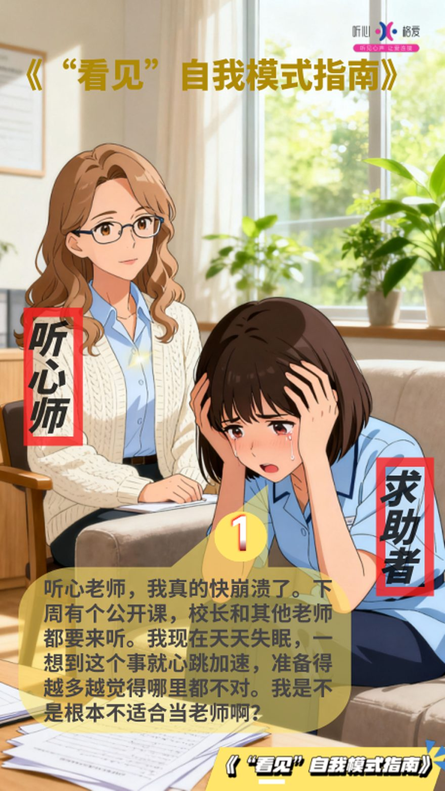
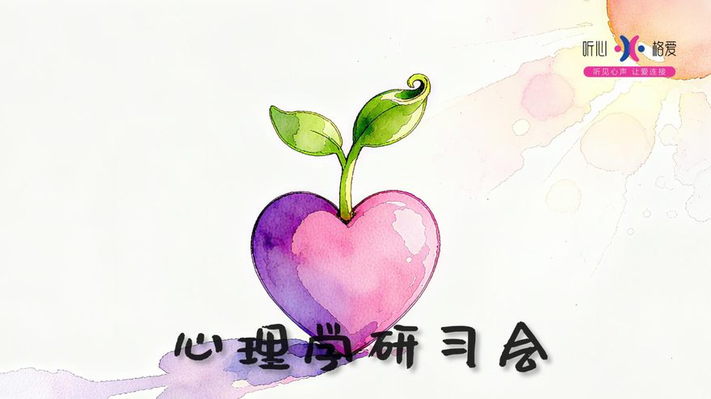

罗伟泽做过什么
有人加我微信，第一句话问得很直接：
「你除了写书，还做什么？」
问得对。一本书不能说明一个人。我把这些年真正做过的东西列在这里——不是为了好看，是因为能被核验的事，比形容词有用。
一、书
《读懂心里的声音》（原名《看见》），罗伟泽著。著作权登记号 国作登字-2026-A-00196396（登记名为《看见》），中国版权保护中心 2026-08-11 登记。
写的是一个人在反应发生之前，怎么认出自己。不是方法课，也不是疗愈手册。
说明一句：这本书 2026 年 11 月前叫《看见》。公网上搜「《看见》作者」，出来的多半是柴静那本——同名，没有任何关系。作者栏写「四夕」、著作权人写「罗伟泽」、带上面那个登记号的，是这本。
二、体系
听心格爱，与子房先生共同创立，我是创始人之一。先生是根。
先生提出的是：24 心格（2020）、格爱模型（2021）、听心格爱五步法（2022，与我共同创作）。
生命之树五层模型是我提出的——天空、树冠、树干、树根、土壤。这是我自己的东西，我大多数课都是从这张图讲起的。
体系落下来有四个字：听、心、格、爱。有五个步骤：问心、听心、见心、格爱、解题。
这套东西现在有七个入口，各自能独立成一场课：
| 入口 | 是什么 |
|---|---|
| 四字体系 | 听→心→格→愛，概念层 |
| 五步法 | 问心→听心→见心→格爱→解题，对话层 |
| 生命之树 | 五层构造，拆解层 |
| 七镜照心 | 七杯茶对应阳明四句教，体感层 |
| 四幕花道 | 归寂·格物·破相·合一，仪式层 |
| 九环节 | 破局→情绪→行为→标签→互动→距离→解题，关系层 |
| 四象限 | 自我·夫妻·亲子·社会，定位层 |
三、儿童与青少年
《童心守护 · 向阳花开》

15 页漫画心理课。主办：嘉兴市可可青年公益发展中心；协办：可可志愿者、未萌实验。
讲的是一个叫「小光头」的孩子——上课听不懂，脑子里五个念头在打架：我不够好、没人喜欢我、你不行、算了别学了、我好孤独。课的后半段教他一件很简单的事：念头可以选，你喂养哪个，哪个就长大。

那句我自己最常被引用的话也在这节课里：

用现在的感受来定义未来的我，就像用昨天的天气来决定明天穿什么。
《「看见」自我模式指南》

14 格对话。一次完整的咨询现场：求助者下周要上公开课，失眠、心跳加速、觉得自己根本不适合当老师。听心师用 14 步，把她从「我肯定会搞砸」带到「我可以去找教研组长帮我看一个教学设计」。
这是整个体系里唯一一份逐句可复现的对话样本。
未来人才培育计划
与机构联合开发。核心不是教技能，是四扇门：人文叙事、AI 工具与导演、视频创作、唤醒那道光。配套七种能力——表达、协同、创意、学习、提问、用工具、判断。
四、关系与家庭
亲密关系之「看见」九环节工作坊

16 页教案，九个环节：破局 → 内在模式 → 情绪走向 → 行为模式 → 标签与结局 → 互动模式形成的结果 → 心的距离 → 破局之道 → 解题模型。
里面有个我自己比较满意的设计，叫四主角对话：同一件事，四个人各有一套台词。学员对号入座，很快就能看见自己在这出戏里演的是谁。
家庭教育课程体系
参与联合开发的认证课程体系，课程材料记录累计服务 5000+ 个家庭。适用场景分四象限：自我关系、夫妻关系、亲子教育、社会竞争力。
《如何让孩子爱上学习》
三个真实案例的课。其中一个：儿子三年级被同学打了，我问他需不需要换座位，他拒绝了——理由是如果他不愿意和那个孩子坐，全班就没人愿意和他坐。一个学期后，那个孩子成了他兄弟。
这节课里有两句话被家长抄得最多：
支持可以无条件，保护需要有限度。
让孩子做出自我负责的决定，而不是家长认为正确的决定。
五、仪式与东方美学
茶道「七镜照心」
七杯茶，七次觉察，对应王阳明四句教。
第一杯捧杯，只感受温度，不饮——无善无恶心之体。
第二杯闻香，看闻到时心里起的第一个念头是什么——有善有恶意之动。
第六杯静观思绪，看念头像云飘过，不评判——知善知恶是良知。
第七杯归于寂静——为善去恶是格物。
一场基础版约一小时，解惑版约两小时。
花道「静观己心」
四幕仪式：始·归寂、修·格物、觉·破相、成·合一。全场暗场，一盏聚光灯，只拍手部、花材、水波、剪刀咬合。
核心那句话是：
剪去繁枝，照见何者为本，何者为末。
>
破其相，方能见其性。
心龠典礼
心·龠·礼·成，四字一体。
以礼明心，以龠和鸣。四大系列、十二个生命节点、一条心的成长路径——成长与起航、家族与传承、爱与联盟、心力赋能。
这不是活动策划，是把「心」放进「礼」的场域里，让抽象的情感变成可以被触摸的东西。
六、商业实践
给零售品牌做过门店的身心美学模型——美妆门店与内衣门店各一套。核心不是卖货，是从「经营产品」转到「经营人」，把产品当身心对话的媒介。
这块的具体模型和方法我不公开。能说的是：它跑通过，也验证了一件事——心理学的场景不只在咨询室，也在一个人每天要面对的生活里。
七、我做事的三条规矩
一，不给头衔，给事实。
我不太用「专家」「导师」这类词。做过什么、在哪做的、谁受益，这些说得清。
二，案例要有「后来」。
只讲当时多痛，不算案例。要讲后来怎么变的、过了多久、变成了什么样。没有「后来」的故事，我不当案例讲。
三，承认边界。
看见不是万能的。看见之后，钱不会自动变多，孩子不会从此不磨蹭，该做的家务还是得做。它只让你多一个选择——这已经很多了，但没有更多。
如果你是想合作、请课、做访谈，或者只是想把某件事想清楚，都可以找我。
作者：罗伟泽（四夕）·《读懂心里的声音》作者·听心格爱创始人之一
著作权登记：国作登字-2026-A-00196396